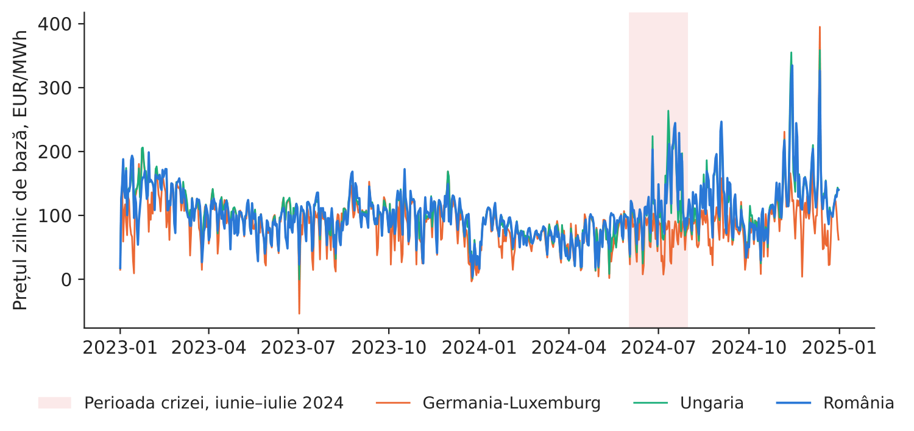
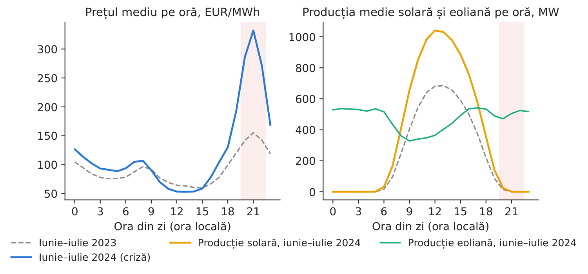
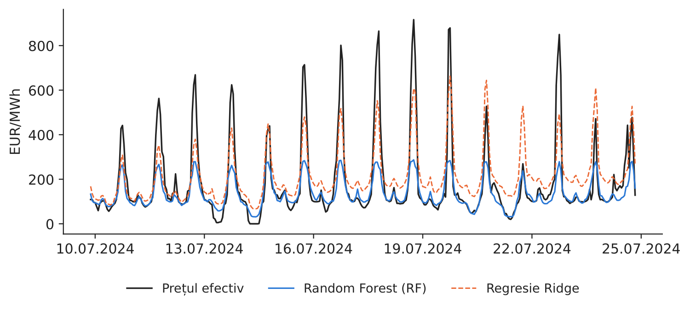
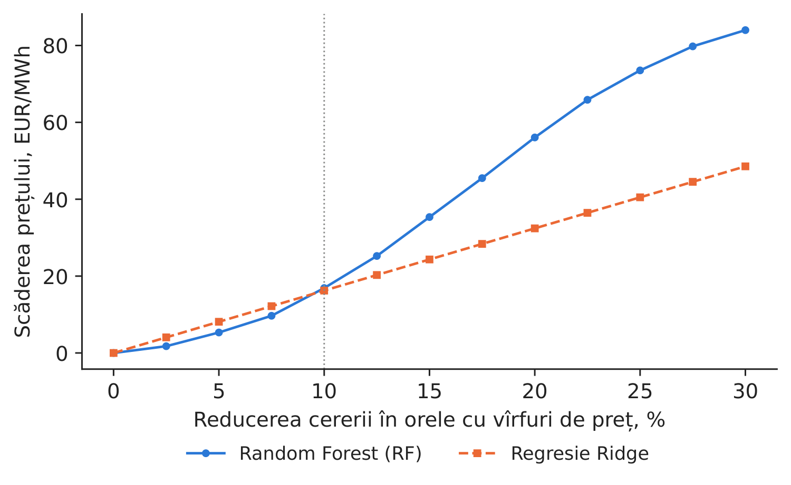

Studiul de caz 1 · Cursul 1
Criza prețurilor din vara anului 2024 — ce intervenție ar fi fost eficientă?
Prof. dr. Daniel Traian PELE
Academia de Studii Economice din București, Departamentul de Statistică și Econometrie
Academia Română, Institutul de Prognoză Economică
Lucrarea de referință
Andrei, A.-V., Pele, D.-T. și Cramer, A.-A. (2026). Evaluating intervention effectiveness during extreme price events: A counterfactual analysis of Romania’s 2024 energy crisis. Proceedings of the International Conference on Business Excellence, 20(1), 84–103. doi:10.2478/picbe-2026-0013
Problema decizională
În iulie 2024, pe piața pentru ziua următoare (PZU) din România, administrată de OPCOM (operatorul pieței de energie electrică și de gaze naturale din România), prețul de închidere a depășit 900 EUR/MWh în unele ore de seară. Același episod ridică întrebări diferite pentru trei decidenți. Operatorul de transport și de sistem (OTS), Transelectrica, trebuie să aleagă instrumentul de urgență la care va recurge în următorul val de căldură: răspunsul contractat al cererii (DR, demand response), importuri maxime sau o producție regenerabilă mai mare. Un furnizor trebuie să stabilească dacă merită să plătească marii clienți industriali pentru a-și reduce consumul în orele critice. Un mare consumator trebuie să decidă dacă semnează un contract de reducere a consumului la cerere. Toți trei au nevoie de aceeași informație: cu cît scade prețul dacă cererea se reduce cu \(x\) % în orele cu vîrfuri de preț?
Lucrarea de referință
Întrebarea de cercetare. Ce tipuri de intervenții reduc cel mai mult prețurile extreme, ce amploare trebuie să aibă, cum se combină între ele, care sînt fezabile și în ce măsură ora din zi și condițiile meteorologice le limitează efectul (p. 85)?
Datele. România, ianuarie 2018 – mijlocul anului 2024, date orare ENTSO-E (Rețeaua europeană a operatorilor de transport și de sistem pentru energie electrică): producția pe tipuri de combustibil, prognozele pentru ziua următoare privind consumul și producția solară și eoliană; prețurile pentru ziua următoare (serie zilnică, aliniată la înregistrările orare); temperaturile din 10 orașe; prețurile petrolului, gazelor naturale și certificatelor de emisii de CO\(_2\). Modelele folosesc ultimele 5.000 de ore (aproximativ 208 zile): 4.000 de ore pentru antrenare și 1.000 pentru testare, perioada de test acoperind lunile iunie–iulie 2024 (p. 88).
Metoda. Prețul este prognozat cu un model Random Forest (RF), adică un ansamblu de arbori de regresie (în română, „pădure aleatoare”), pe baza a 70 de variabile explicative construite de autori; o regresie Ridge (regresie liniară cu penalizare) servește drept verificare a robusteții. Fiecare scenariu modifică datele de intrare (consum mai mic, producție solară sau eoliană mai mare), recalculează variabilele derivate și reține noua prognoză.
Principalele rezultate ale lucrării.
- Calitatea ajustării: modelul RF atinge un coeficient de determinare \(R^2 = 0{,}5963\) (p. 90); pentru prețurile de peste 500 EUR/MWh, subestimarea ajunge la 53,9 % (p. 91). Pentru episodul de vîrf, de 1.021,61 EUR/MWh, prognoza a fost de numai 325,18 EUR/MWh (p. 91).
- În ora de vîrf, producția solară era de numai 3 MW, iar deficitul de ofertă față de cerere atingea 2.686 MW (Tabelul 1, p. 94–95).
- Un răspuns al cererii de 10 % (aproximativ 728 MW de consum redus) scade prețul cu 70,4 % (Tabelul 2, p. 95); nicio intervenție, aplicată separat sau în combinație cu altele, nu coboară prețul sub 200 EUR/MWh (p. 95).
- Modelele RF și Ridge produc clasamente similare pentru cele 147 de scenarii (coeficientul Spearman \(\rho = 0{,}7299\), \(p<10^{-25}\)), iar ambele includ răspunsul cererii în toate cele 10 scenarii aflate pe primele locuri (Tabelul 3, p. 97). Ambele modele indică răspunsul cererii drept instrumentul prioritar („Nivelul 1”); cea mai bună combinație fezabilă aduce, față de răspunsul cererii aplicat singur, doar 0,6 puncte procentuale în plus (Tabelele 4–5, p. 98–99).
Metoda, pas cu pas
Intuiția metodei
Estimăm un model care învață, din perioadele normale, cum reacționează prețul la consum și la producția solară și eoliană. Apoi îi punem întrebarea: „Care ar fi fost prețul în seara de criză dacă consumul ar fi fost cu 10 % mai mic?” Diferența dintre cele două prognoze este efectul estimat al intervenției — un contrafactual, adică ceea ce s-ar fi întîmplat într-o situație care nu s-a produs în realitate.
Fie \(y_t\) prețul pentru ziua următoare în ora \(t\) (EUR/MWh), \(L_t\) consumul, iar \(S_t\) și \(W_t\) producția solară, respectiv eoliană (MW). Consumul rezidual \(L^{res}_t = L_t - S_t - W_t\) este cererea care trebuie acoperită de centralele dispecerizabile (pe gaze, pe cărbune, hidrocentrale, nucleare) și din importuri. Modelul \(\hat y_t = \hat f(\mathbf x_t)\) asociază un preț vectorului de variabile explicative \(\mathbf x_t\) (consum, producție solară și eoliană, consum rezidual, ponderea regenerabilelor \((S_t+W_t)/L_t\), valori decalate ale prețului și ale ofertei, variabile calendaristice). Modelul RF calculează media prognozelor furnizate de \(B\) arbori de regresie, \(\hat f(\mathbf x) = \frac1B\sum_{b=1}^{B} h_b(\mathbf x)\), fiecare arbore \(h_b\) fiind o succesiune de reguli de tip „dacă–atunci”, estimate pe un eșantion bootstrap. Un scenariu cu răspunsul cererii \(d\) înlocuiește consumul cu \(L'_t = (1-d)L_t\) și recalculează \(L'^{res}_t\) și ponderea regenerabilelor (ec. 10–11 din lucrare). Efectul estimat este
Prețurile de referință. Lucrarea raportează prețurile din scenarii la prețul de vîrf observat, \(y^*_t\) (ec. 9); exercițiul nostru măsoară variația față de prognoza de bază a fiecărui model, \(\hat f(\mathbf x_t)\). Cele două procente au baze de raportare diferite, de aceea trebuie prezentate separat.
În practică
Stabiliți mai întîi ordinea instrumentelor, apoi verificați nivelul prețului prin teste de stres. Atît lucrarea, cît și replicarea noastră arată că reducerea cererii în orele de vîrf de seară este instrumentul prioritar; o producție solară suplimentară nu ajută după apusul soarelui. Interpretați efectele absolute ținînd seama de acuratețea fiecărui model în orele cu prețuri extreme.
Replicare pe datele cursului
Notebook-ul C1_notebook_RO.ipynb folosește datele cursului (data/clean/: prețurile orare, producția și consumul din România și fluxurile transfrontaliere, preluate de pe energy-charts.info).
Eșantionul de antrenare: 1 ianuarie 2023 – 31 mai 2024 (12.405 ore); eșantionul de test: iunie–iulie 2024 (1.464 de ore). Față de lucrare, implementarea de la curs folosește valorile efective (nu prognozele) ale consumului și ale producției solare și eoliene, prețuri orare și nicio variabilă meteorologică.

Figura 1. Prețul zilnic de bază, 2023–2024; perioada crizei este evidențiată.
Sursa: energy-charts.info; 1.1.2023–31.12.2024.

Figura 2. Profilul orar, iunie–iulie 2024 comparativ cu aceeași perioadă din 2023.
Sursa: energy-charts.info; iunie–iulie 2023 și 2024.
Ce arată datele. În perioada crizei, prețul mediu a fost de 121,8 EUR/MWh, iar maximul, de 916,72 EUR/MWh, s-a înregistrat la 18.07.2024, ora 21:00 (timp local). Criza s-a manifestat seara: la ora 21:00, prețul mediu a fost de 332,3 EUR/MWh (față de 155,4 cu un an înainte), în timp ce producția solară medie era de 1 MW, comparativ cu 1.031 MW la ora 13:00 (Figura 2) — în concordanță cu episodul de vîrf analizat în lucrare, cînd producția solară era practic nulă. Cel mai mare preț din eșantionul de antrenare a fost de 436,89 EUR/MWh, deci modelele nu întîlniseră niciodată prețuri de nivelul celor din iulie 2024.
Tabelul 1. Acuratețea prognozelor pe eșantionul de test, 01.06.2024 – 31.07.2024 (zile de livrare CET, ora Europei Centrale, 1.464 de ore; „previziune perfectă” = consumul și producția solară și eoliană efective din ora respectivă, o variantă optimistă; „informația de la închiderea porții” = prețurile din ziua \(d-1\) și variabilele fundamentale realizate din ziua \(d-2\); MAE = eroarea absolută medie, EUR/MWh; „Subestimare” = subestimarea medie, în % din prețul efectiv). Cea mai bună valoare este marcată cu aldine.
| Model | \(R^2\) | MAE | MAE 200–500 | MAE \(>\)500 | Subestimare \(>\)500, % |
|---|---|---|---|---|---|
| Naiv (prețul cu 24 de ore înainte) | 0,584 | 41,6 | 110,7 | 180,1 | 15,8 |
| RF, informația de la închiderea porții | 0,468 | 35,4 | 116,6 | 441,4 | 64,4 |
| Ridge, previziune perfectă | 0,639 | 45,8 | 80,4 | 214,2 | 28,8 |
| RF, previziune perfectă | 0,553 | 32,4 | 98,0 | 406,8 | 59,1 |
Sursa: calcule proprii pe date energy-charts.info; 31 de ore de test cu prețuri peste 500 EUR/MWh.

Figura 3. Prețul efectiv și prețul prognozat, 10–24 iulie 2024.
Sursa: modelele noastre; energy-charts.info.

Figura 4. Scăderea prognozată a prețului în funcție de reducerea cererii, media pe cele 74 de ore cu vîrfuri de preț.
Sursa: modelele noastre; perioada de test, iunie–iulie 2024.
Tabelul 2. Efectele scenariilor în cele 74 de ore cu vîrfuri de preț (prețuri peste 310,9 EUR/MWh), măsurate ca reducere față de prognoza de bază a fiecărui model. Cel mai mare efect este marcat cu aldine.
| Scenariu (ore cu vîrfuri de preț) | RF, EUR/MWh | RF, % | Ridge, EUR/MWh | Ridge, % | MW reduși |
|---|---|---|---|---|---|
| Răspunsul cererii 5% | 5,3 | 2,2 | 8,1 | 2,3 | 386 |
| Răspunsul cererii 10% | 16,9 | 7,0 | 16,2 | 4,7 | 771 |
| Răspunsul cererii 20% | 56,1 | 22,7 | 32,4 | 9,3 | 1.543 |
| Răspunsul cererii 30% | 84,0 | 33,7 | 48,6 | 14,0 | 2.314 |
| Solar +50% | 0,5 | 0,2 | 0,2 | 0,1 | 0 |
| Eolian +100% | 8,0 | 3,3 | 3,6 | 1,1 | 0 |
| Solar +50%, eolian +50%, DR 5% | 10,7 | 4,5 | 10,1 | 2,9 | 386 |
Rezultatul replicării. Modelul RF are \(R^2 = 0,553\) și cea mai mică eroare MAE (32,4 EUR/MWh), însă în orele cu prețuri de peste 500 EUR/MWh subestimează prețul, în medie, cu 59,1 %; de aceea, nivelurile de preț din scenarii trebuie interpretate ținînd seama de acest diagnostic. Rîndurile RF și Ridge folosesc valorile efective ale consumului și ale producției solare și eoliene din ora de livrare (previziune perfectă), deci acuratețea lor este optimistă; numai cu informația de la închiderea porții (prețurile din ziua \(d-1\); variabilele fundamentale realizate numai pînă în ziua \(d-2\), ultima zi măsurată), același RF obține \(R^2 = 0,468\) și MAE 35,4 EUR/MWh. Scenariile folosesc modelul cu previziune perfectă, deoarece modifică variabilele fundamentale ale orei de vîrf. O reducere a cererii cu 10 % (în medie 771 MW) scade prețul prognozat în orele de vîrf cu 16,9 EUR/MWh (7,0 %) în modelul RF și cu 16,2 EUR/MWh în modelul Ridge; o producție solară mai mare cu 50 % nu schimbă aproape nimic (0,5 EUR/MWh), deoarece vîrfurile de preț apar după apusul soarelui. Cele două modele ordonează similar cele 75 de scenarii (coeficientul Spearman \(\rho = 0,906\)). Cifra relevantă pentru decizie: dacă reducerea prețului ar fi cea estimată de RF, cele 90 % din consum rămase în orele de vîrf ar fi costat cu aproximativ 8,21 milioane EUR mai puțin; aceasta este suma maximă pe care un furnizor ar putea-o plăti pentru 57.086 MWh de consum redus.
Întrebări pentru discuție
- Într-o notă către consiliul de administrație privind răspunsul cererii, cum ați face distincția între prețul observat în timpul episodului, prognoza de bază a modelului și prețul din scenariu? Care dintre aceste comparații vă susține decizia?
- Transelectrica dispune de aproximativ 800 MW de răspuns al cererii contractat (lucrarea, p. 87). Este suficient pentru o seară asemănătoare celor din iulie 2024? Ce informații suplimentare v-ar fi necesare?
- Compania dumneavoastră deține un parc fotovoltaic. De ce obține venituri reduse într-o criză ca aceasta și ce tip de activ ar fi mai profitabil?
- În eșantionul de antrenare, modelul nu a întîlnit prețuri mai mari de 436,89 EUR/MWh. Cum ar trebui să influențeze acest fapt modul în care folosiți scenariile sale?
- Unui mare consumator i se oferă 300 EUR pentru fiecare MWh neconsumat în orele critice. Pe baza Tabelului 2, ați semna contractul? Ce alți factori contează (pierderea de producție, termenul de preaviz)?
Limitele replicării
(i) Scenariile noastre reflectă asocieri estimate de modele, nu o simulare a curbei de ofertă construite după ordinea de merit (merit order). (ii) Eșantionul: mediile sînt calculate pe numai 74 de ore dintr-o singură vară. (iii) Extrapolarea: prețurile din perioada crizei depășesc intervalul observat în eșantionul de antrenare, de aceea efectele absolute trebuie verificate prin teste de stres. (iv) Importurile, limitele capacității de interconexiune și rezervele din lacurile de acumulare nu sînt incluse ca instrumente în scenariile din notebook. (v) Modelul folosit în scenarii are ca intrări valorile efective ale variabilelor fundamentale (previziune perfectă), deci supraestimează ceea ce se putea ști cu o zi înainte.
Studiul de caz 1 pe scurt
- ÎntrebareCe instrument de urgență reduce cel mai mult prețul de vîrf într-o seară caniculară?
- DatePrețuri orare RO (România), consum, producție solară, eoliană, hidro, pe gaze, importuri; antrenare 2023–mai 2024, test iunie–iulie 2024.
- MetodăRandom Forest + Ridge; contrafactual: modificăm consumul și producția solară sau eoliană, apoi refacem prognoza.
- RezultatDR 10 %: \(-\)16,9 EUR/MWh (RF), \(-\)16,2 (Ridge); solar +50 %: \(\approx\)0. Lucrarea: DR este instrumentul de Nivel 1.
- DecizieContractați mai întîi răspunsul cererii în orele de seară; valoarea sa este de cel mult 8,21 mil. EUR într-o vară ca cea din 2024.

Sursa: modelele noastre RF și Ridge pe date energy-charts.info, orele cu vîrfuri de preț din iunie–iulie 2024.
Abrevieri
| CET | ora Europei Centrale |
|---|---|
| DR | răspunsul cererii |
| ENTSO-E | Rețeaua europeană a operatorilor de transport și de sistem pentru energie electrică |
| MAE | eroarea absolută medie |
| OPCOM | operatorul pieței de energie electrică și de gaze naturale din România |
| OTS | operatorul de transport și de sistem |
| PZU | piața pentru ziua următoare |
| RF | Random Forest |
| RO | România |
Textul, cifrele, graficele și tabelele acestei pagini sînt cele ale studiului de caz; toate cifrele sînt calculate de notebook-ul studiului pe datele cursului.